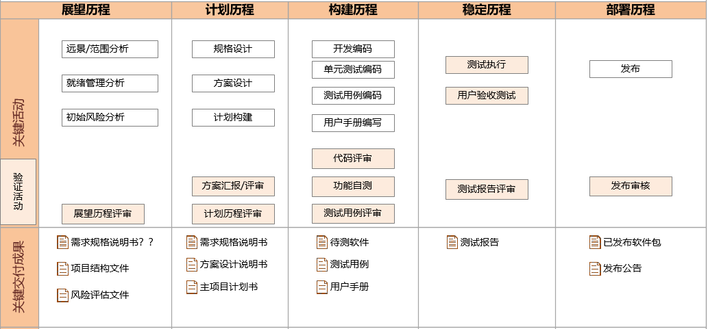

产品研发管理制度指导书
版次：第1版
类型：程序文件
部门：软件部
| 文件版本 | 修改前文件版本 | 主要修订内容和原因 | 修订人 | 修订日期 |
|---|---|---|---|---|
| R1 | 新建 | 胡凯烽 | 2022.01.21 |
1 目的
软件产品开发的目标：高效、高质量地开发出让用户满意的产品。有效的研发管理是保证产品质量、提高客户满意度、确保经营效益、提升竞争实力的最基本保障，也是软件开发企业赖以生存和发展的前提。为此，针对我司软件产品开发项目的特点，制定本制度。
2 适用范围
适用于采用 MSF 开发流程的软件平台以及产品线各团队。
3 术语及定义
MSF：即 Microsoft Solution Framework 。
《MSF 精髓》：即《微软软件研发的奥秘-MSF 精髓》。
产品型号：是内部产品研发管理的单元， 保证拥有独立的代码仓库。
4 开发流程
在 MSF 指导下， 强调关键节点与监控。项目实施过程分为五大历程：展望历程，计划历程，构建历程，稳定历程，部署历程。整个开发过程是个迭代过程，并且各历程可互相重叠（详见《MSF 精髓》第 6.3 章）。下图描述了各历程的关键活动（包括了验证活动），关键交付成果。

4.1 活动详解
4.1.1 远景/范围分析
远景/范围分析是展望历程中重要活动。远景是以无拘无束的方式来思考解决方案未来可能的样子，范围则是在项目的约束条件之下找出远景所要实现的部分。
- 输入：市场需求。
- 输出：远景/范围文件
- 负责人角色：产品管理。
- 准出原则：
- 通过展望历程评审。
- 说明：
解决方案的远景与范围文件通过审批，需要团队与利益关系人都认可对于问题和机会的描述，并且对概念性解决方案和交付方法达成共识。
4.1.2 就绪管理分析
准备就绪包括两个部分：技术准备就绪和心理准备就绪（比如个人意愿和心理准备）。MSF 主要针对的是技术准备就绪。它在解决方案交付中，为评定和获取知识、技能、必要能力提供了指导和流程。它基于 MSF 基本原则，在整个解决方案生命周期内，指导如何积极地做好准备。
- 输入：市场需求。
- 输出：项目结构文件。
- 负责人角色：程序管理。
- 准出原则：
- 通过展望历程评审。
- 说明：
在这一步骤包括以下几个活动：
- 评估个人知识、技能和能力；
- 重新检查准备就绪需求；
- 确认和分析准备就绪差距；
- 制订学习计划。
4.1.3 初始风险分析
评估风险开始于项目的初期。每一个可能直接或间接产生风险的决策都要记录在案。实现解决方案的备用方法有什么风险也要予以考虑。项目的权衡取舍也要考虑风险的因素。每一件事都有可能改变风险的等级，并且影响我们所有的决策和计划。
- 输入：市场需求。
- 输出：风险评估文件。
- 负责人角色：程序管理。
- 准出原则：
- 通过展望历程评审。
- 说明：
在展望历程所有风险的确定都要文档化，将其记录在初始的风险评估文档中。这个文档构成了后续风险管理的基础。这个时候也是团队决定如何实现 MSF 风险管理流程的时候。
4.1.4 规格设计
需求规格说明书是详细描述解决方案的样子和行为的文档。它可能是指一份具体的文档，也可能是一系列文档，对功能做详细的说明。
- 输入：市场需求。
- 输出：需求规格说明书。
- 负责人角色：架构。
- 准出原则：
- 通过计划历程评审。
4.1.5 方案设计
当解决方案的细节需求获得核准，团队便开始以递增的、系统化的方式来设计解决方案以及其他协助解决方案交付所需的机制（例如测试控制机制）。以展望历程所定义的概念性解决方案以及功能规格中描述的需求和设计目标为起点，MSF 提出了三段式的设计流程：概念设计、逻辑设计以及实体设计。
- 输入：需求规格说明书。
- 输出：方案设计说明书。
- 负责人角色：架构。
- 准出原则：
- 通过方案汇报/评审。
- 说明：
设计流程应该是结构化的，这样，每个设计步骤就能够验证上一个步骤，并且奠定下—个步骤的基础。当团队在进行某个设计流程时，可能需要重新检查先前的设计，由此可能发现之前设计的一些错误、矛盾或遗漏之处。
4.1.6 计划构建
计划如何构建解决方案包含了两条工作流，而其工作内容的依据就是功能规格里面对解决方案的描述。其中一条工作流主要是解决方案设计的演进过程，也就是将展望历程期间所定义的概念解决方案逐渐发展成详细设计，以便在构建历程能够进行实际的构建。另一条工作流则是负责把各项计划整合成主项目计划。
- 输入：方案设计说明书。
- 输出：主项目计划书。
- 负责人角色：程序管理。
- 准出原则：
- 通过计划历程评审。
- 说明：
解决方案的需求文件说明了需要构建哪些东西。解决方案的设计和项目计划则说明了如何构建解决方案。
4.1.7 开发编码
- 输入：需求规格说明书。
- 输出：软件代码。
- 负责人角色：开发。
- 准入原则：需求规格说明书已通过评审。
- 准出原则：
- 通过单步调试
- 通过代码评审
- 通过功能自测
4.1.8 单元测试编码
单元测试是开发人员保证代码正确的有效方式。
- 输入：开发编码文件。
- 输出：单元测试编码文件。
- 负责人角色：开发。
- 说明：
- 单元测试用例需全部通过
4.1.9 测试用例编码
测试用例采用代码化方式管理。
- 输入：需求规格说明书。
- 输出：测试用例。
- 负责人角色：测试。
- 准出原则：
- 通过测试用例评审。
4.1.10 用户手册编写
用户手册是指导用户使用和维护产品的指导性文档。
- 输入：需求规格说明书。
- 输出：用书手册。
- **负责人角色： ** UE 。
- 说明：
尽最大可能提高解决方案的易用性；提高用户就绪水平和成效。
4.1.11 测试执行
按照主项目计划中的系统测试计划执行。
- 输入：系统测试计划、测试用例
- 输出：测试报告。
- 负责人角色：测试。
- 准出原则：
- 按照系统测试计划已执行完毕。
- 所有通用必测测试用例通过。
- 所有致命及严重 Bug 已回归通过。
- 遗留Bug已通过团队评估。
4.1.12 用户验收测试
用户验收测试就是要确保用户认同解决方案已经完全符合先前定义的用户验收标准，并且符合用户和企业的需求。这些测试纯粹是以用户的角度来衡量及验证解决方案的功能和易用性。
- 输入：测试报告，待发布软件包。
- 负责人角色： UE 。
4.1.13 发布
利益关系人和项目团队都同意解决方案的发布已经准备就绪；运维与支持团队也已准备好接手解决方案后续的工作；部署解决方案所需的资源也已经就绪，包括人员、设备、配套设施、工具和部署脚本；部署计划和方法都已经经过审查。将解决方案部署到目标环境的工作可以开始了。
- 输入：测试报告。
- 输出：发布通知。
- 负责人角色：发布/运维。
- 准出原则：
- 通过发布审核。
5 管理规范
5.1 就绪管理
目标
- 建立代码仓库，约定代码仓库的目录及文件管理规范；
- 梳理团队成员及确定利益关系人； #### 内容与职责
明确代码仓库的管理方式及文件管理规范；确保建立核心团队及确定利益关系人。
工作规范
梳理团队成员
程序管理需确定团队的核心成员及人员清单，并给出评估。
确定利益关系人
程序管理及产品管理需确定项目的利益关系人，确保后续的沟通顺畅。
确定代码仓库管理
仓库是研发人员的工作界面，一致的仓库管理会降低研发人员的熟悉难度。软件部需提供相应的规范文件。
5.2 需求管理
目标
- 界定明确的项目范围，建立项目实施工作的基础；
- 完整、准确地描述软件系统的需求规格，作为架构、开发、测试过程中跟踪需求的基础；
- 根据明确的需求变更管理流程，控制项目的需求变更，保证软件系统的质量，降低项目实施的风险。
内容与职责
清晰界定项目实施软件系统的功能需求规格，是软件系统开发项目项目管理最基本和最关键的工作之一。
工作规范
1.需求规格说明书
产品管理、架构、程序管理需协力通过需求调研和需求分析的工作过程，形成的完整准确地描述软件系统功能需求的项目正式交付文档。
2.需求评审
需求评审是所有软件开发项目实施过程中必须执行的关键工作，是设计、开发及测试实施工作启动的前提条件。
3.需求变更管理
需求变更管理适用于针对软件系统的功能需求规格的变更。有效的需求变更管理是项目工作范围管理、需求管理、进度管理、质量控制、成本管理的有力保障，也是软件系统开发项目中主要挑战之一。
5.3 沟通管理
目标
- 保证项目相关的事宜（包括项目进度、存在的问题、需要协调的工作等等）能够在公司内部和公司外部得到及时、准确的传递和理解；
- 使公司、客户、合作伙伴自始至终对项目持有一个正确、合理的期望值，保证合作各方对项目的满意度。
内容与职责
项目实施过程中，不同的项目参与者及相关方都会不同程度地参与到项目的沟通工作之中。在这些沟通中，程序管理首先处于一个中心位置，在众多信息的传递中拥有最核心、最权威的地位；再者，程序管理需要对这些信息的沟通进行管理，以确保这些信息的传递是有秩序的、及时的、准确的、合适的，最终目的是保证这些项目参与者和关注者对项目的实际情况能够产生正确的理解。
工作规范
1. 项目启动沟通
项目实施工作在公司内部的正式启动，以项目立项审核通过为标记。正式启动需具备以下条件：
- 项目范围已描述清晰。
- 项目计划已准备完毕。
- 工作量估算已完成。
- 团队核心角色已到位， 具备足够资源开展工作。
2. 每日站立会议
每日站立会议具体的指导原则：
- 会议准时开始。
- 欢迎其他人员参加，但只有团队成员可以发言。
- 出席者站立开会，注意控制会议时间。建议控制在 15 分钟。建议在早上开，内容：1. 昨天完成哪些工作；2.今天打算做什么；3.完成目标存在什么障碍。
- 会议应在固定地点和每天的同一时间举行。
3. 项目工作周报
项目正式启动后，必须每周分别向外部相关方、内部团队成员及主管领导发送本周工作内容。
4. 故障信息沟通
团队收到外部反馈的故障信息后，不论故障等级，应立刻响应故障提交者，告知已经进入故障处理流程， 并通知程序管理及测试，并在解决故障 1 小时内向以上相关人员发出故障报告。
5.4 进度管理
目标
- 根据工作任务分解结构，制定项目实施计划。
- 跟踪各项工作任务的实际完成情况，真实地汇报项目的实际进度。
- 及时发现项目进度的延误，以制定必要的补救计划，争取项目进度尽快重回正轨。
内容与职责
项目进度管理指的是对《主项目计划书》的计划和控制，由程序管理负责。
工作规范
1. 计划制定
《主项目计划书》由程序管理在计划历程中负责编写。
2. 进度控制
程序管理应每周更新《项目实施计划》中的每项工作任务的实际完成百分比，并向公司主管领导提交。
5.5 质量管理
目标
通过对项目实施过程中关键输出物品的质量检查，确保软件系统和项目实施的质量。本节主要针对系统设计和系统测试的关键输出物品（分别为《方案设计说明书》和《集成测试计划》）的质量控制工作提出规范要求。
内容与职责
架构、开发负责《方案设计说明书》（可能有多个功能的方案）；开发根据设计文档编写代码，并编写单元/功能测试，并完成自测。测试负责《集成测试计划》；并按照计划进行测试。
工作规范
1.方案评审
对于技术复杂度高的功能，需进行方案设计并评审。 方案评审作为系统设计工作的关键质量控制点，并由专家委员会负责评审。
2.测试用例评审
测试用例评审指针对测试用例的评审工作。 测试用例评审作为系统测试工作的关键质量控制点，应该以独立工作任务的形式，在《项目实施计划》中明确地体现，并由程序管理负责协调执行。
3.代码评审
针对代码开发的评审工作，在《软件编码规范》里对代码的编写已提出具体、明确的规范指引。 代码评审作为系统开发工作的关键质量控制点，应该以独立工作任务的形式，在《项目实施计划》中明确地体现，并由程序管理负责协调执行。
6 检查
本着由公司统一编写与修订，各部门负责落实执行和监督的原则。
- 公司层面：由软件部负责对各部门项目的实施与管理过程以及对应输出依据本制度的要求进行检查或抽查，对不符合项目进行记录并公布。
- 部门层面：由总工负责对部门内项目的实施与管理过程以及对应输出依据本制度的要求进行检查或抽查，对不符合项目进行记录并公布。
- MSF 团队层面：由程序管理负责对团队内项目的实施与管理过程以及对应输出依据本制度的要求进行检查或抽查，对不符合项目进行记录并公布。
6.1 检查内容
主要针对第四章描述的关键交付成果。
7 项目齐套清单
| 序号 | 名称 | 负责角色 | 公司评审 | 是否必需 | 支持信息 | 备注 |
|---|---|---|---|---|---|---|
| 1 | 《需求规格说明书》 | 产品管理、UE、架构、程序管理 | 是 | 是 | 《需求规格说明书模板-R1》 | 一个产品型号一个文档， 一个发布版本需带有一个文档版本。 |
| 2 | 《项目架构文件》 | 程序管理 | 是 | 是 | ||
| 3 | 《风险评估文件》 | 程序管理 | 是 | 是 | ||
| 4 | 《主项目计划书》 | 程序管理 | 是 | 是 | ||
| 5 | 《项目实施计划》 | 程序管理 | ||||
| 5 | 《方案设计说明书》 | 架构 | 是 | |||
| 6 | 《用户手册》 | UE | 是 | |||
| 7 | 发布公告 | 程序管理 | 是 |